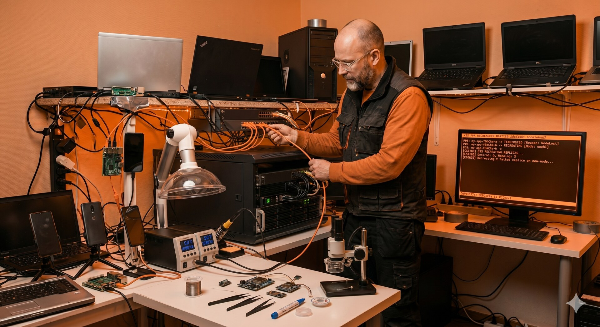

Migrating Frigate NVR to a New Node: Bare-Metal Lessons in a k3s Cluster
An old i5 desktop, a stack of stateful workloads, and the reminder that Kubernetes does not abstract away the hardware — it just makes you very specific about what you are ignoring.
The new Frigate node in the service room — dedicated hardware, dedicated job.
Why Move It at All
Frigate has been running on a Lenovo laptop acting as control plane for the cluster — the same node that handles ingress, scheduling, and a 1.8TB drive of video. It worked, more or less. But the laptop was never meant for sustained transcoding, and every time the AI inference pipeline picked up a busy afternoon in the yard, the API server would start to lag.
So when an old i5-6600 desktop landed in my lap with a GTX 1050Ti still in it, the decision was simple: move Frigate to dedicated hardware, free the laptop to be a proper control plane, and use this as an excuse to clean up some shortcuts I was carrying for months.
What I thought would be one weekend of work became a small lesson in why bare-metal teaches you things that managed Kubernetes hides. This post is about those lessons — not about the YAML.
The Cloud Mindset Does Not Translate
In a managed cluster, migration of a workload is a redeploy. You change the node selector, you wait for the pod to come up, the storage follows because somebody else worried about the storage. The control plane is not your problem. The GPU is a resource type you request. The network is flat and works.
On bare metal, every one of those assumptions becomes a separate engineering task. And the interesting part is not that you have to do them — it is that doing them by hand is what teaches you what those abstractions actually buy you.
A workload like Frigate is a good test case because it depends on three things that Kubernetes does not solve for you out of the box:
- GPU access for hardware-accelerated inference
- Sustained disk throughput for continuous recording
- Predictable CPU so a busy detection moment does not eat the rest of the cluster
Each of these became its own small story.
GPU Access: The Abstraction Has Edges
Kubernetes does not see your GPU until you teach it to. That sentence sounds obvious, but the first time you hit it, the failure mode is not a clean error — it is a pod that runs, looks healthy, and quietly does CPU inference because nothing in the stack told the workload there was a card available.
The chain that has to be in place is not complicated, but the order matters and every step is silent if it is wrong:
- Drivers on the host
- A container runtime that knows about the GPU
- Containerd configuration that exposes it as a runtime class
- A device plugin running in the cluster to advertise the resource
- A workload that actually requests it
The detail that cost me time was the containerd config. k3s regenerates its containerd configuration on restart, so any direct edit to the config file gets overwritten on the next reboot. The supported path is to edit the template instead. Once you know this, it is a non-issue. Before you know it, you are debugging a problem that fixes itself for an hour and then comes back the next time the node restarts.
The lesson is bigger than GPUs. On managed Kubernetes, you trust that the platform owns the node configuration. On bare-metal, you have to know which files the platform owns, which it regenerates, and which it leaves alone. This kind of distinction is the whole job description for a platform engineer.
Disk Pressure Is the Silent Killer
Frigate writes constantly. Even with event-only recording, nine cameras produce a steady stream of clips, snapshots, and database updates. If all of that lands on the same SSD that holds the OS and the kubelet's working directories, you have made a small bomb with a long fuse.
The first symptom is not slow video. The first symptom is that the kubelet sees the disk filling up and starts to evict pods to recover space. On a single-node-feeling cluster like a homelab, an eviction storm can take out things you actually care about — your monitoring stack, your DNS, sometimes the ingress controller. The cluster eats itself trying to save itself.
The fix is not technical, it is architectural: separate the storage tiers and be explicit about what goes where.
- Fast SSD for the OS, the kubelet, the Frigate database (SQLite is latency-sensitive — moving it to spinning rust gets you locking errors under load), and config
- Large HDD for recordings, mounted as a Persistent Volume bound specifically to that disk
The principle here is not new and it is not Kubernetes-specific. Stateful workloads need a storage plan. The reason this is worth writing down is that the cloud abstracts this completely — you ask for a volume, you get a volume, somebody else reasons about wear and IOPS. On bare-metal, if you don't think about it on day one, you will think about it on day thirty when the cluster falls over and you don't immediately see why.
The Control Plane Is Not An Unlimited Resource Pool
Running etcd and the API server on the same machine that runs your heavy workloads is a tradeoff. Sometimes it is the right tradeoff — small clusters benefit from density. But the moment a workload can saturate the CPU, the control plane needs protection.
Frigate can saturate four cores easily. Multiple cameras detecting motion at once, the AI pipeline picking up a person, the recording layer flushing to disk — under load, ffmpeg and the inference runtime will take everything you give them.
If the API server is starving for CPU at that moment, scheduling decisions slow down, leader elections start to misbehave, and the whole cluster starts to feel sick for reasons that look unrelated to the camera stack. You debug the wrong thing for hours.
The pattern that solves this is straightforward in principle:
- Reserve resources explicitly for system components, so the kubelet knows not to schedule application workloads into that budget
- Apply CPU limits to greedy workloads, so they degrade gracefully under pressure
- Accept that "graceful degradation" for a video pipeline means dropped frames — which is the right failure mode, because the alternative is the API server timing out
This is the kind of decision that would be invisible in a managed environment, where node sizing is a slider and control plane is somebody else's problem. Here it is a design choice that I had to make consciously, with consequences I had to think through.
Networking: Working With What You Have
The honest part of this story is that the new node sits on a different physical switch from the rest of the cluster, in a different part of the apartment, near a solar inverter that dumps electrical noise on everything. In a textbook setup, I would replace the consumer mesh router with OpenWrt, define proper VLANs everywhere, and call it a network.
In real life, the mesh has to keep working because the rest of the household uses it. Replacing it would break roaming for everybody, and OpenWrt does not play nicely with vendor mesh protocols. So the engineering problem becomes: how do I get proper isolation for the camera traffic without rebuilding the network from scratch?
The answer is a hybrid. Cameras live on a restricted segment with no gateway, switch-level VLAN tagging keeps them isolated from the rest of the LAN, and a small startup script on the router reapplies the firewall rules after every reboot because the stock firmware does not persist them.
It is not elegant. But it works, it is documented, and it survives a power cut. For me, this is the part of the job that recruiters underestimate the most: most production environments are not greenfield, and the value of an engineer is often in shipping a clean solution inside a dirty constraint set, not in demanding the constraints go away.
Things That Went Wrong
The pod was healthy and the GPU was idle. Inference was running on CPU because the device plugin was deployed, but containerd had not been pointed at the new runtime class. No error, no warning — just a silent fallback. Took me longer than I want to admit.
SQLite on the HDD is a trap. I put the entire /media/frigate
mount on the slow disk on the first pass, including the database. The web UI got slow, then
locked, then started returning errors that looked like a Frigate bug. It was a storage
decision.
The control plane started missing heartbeats during stress tests. No CPU
reservation meant Frigate happily took every core, and the API server sometimes did not get
its slice in time. Adding --kube-reserved solved it in one config change, but
the symptom was hours of confused log reading first.
The router forgot its rules after a power cut. The VLAN configuration was correct in the GUI, but the iptables rules were not persisted to flash. After the next reboot, the cameras could see the gateway again. Now there is a startup script.
The Payoff
The migration moved more than just a workload. It moved a class of problems off the control plane and gave the cluster headroom it did not have before. The laptop that used to do everything now does scheduling and ingress, which is what control planes are for. The new node does video, which is what it is good at. Each machine is doing the work it is shaped for, and the boundary between them is documented.
But the bigger payoff is in what this kind of exercise teaches. Cloud platforms are built specifically to hide the things this migration forced me to think about — driver chains, storage tiers, control plane isolation, network reality. Hiding them is the right call for most teams, most of the time. But the engineer who has had to do them by hand at least once reads cloud documentation differently. You stop trusting that things "just work" and you start asking which abstraction is doing the work, and what is its failure mode.
That is the skill. The Frigate migration is just the excuse to practice it.
Cluster Context
This runs on the same k3s cluster described in previous posts — three nodes, mixed roles, all bare-metal.
| Node | Role | Hardware |
|---|---|---|
| k3master | Control plane, ingress | x86_64 laptop, headless |
| frigate01 | Frigate, GPU inference, recording | i5-6600, 12GB RAM, GTX 1050Ti, 4TB HDD |
| phones | Application workloads | Three OnePlus devices on postmarketOS |
Frigate now runs on dedicated hardware. The phone cluster handles application backends. The control plane no longer fights for CPU with a video pipeline. Each node has a clear job, and the cluster as a whole is calmer for it.
Previous posts: Running Edge AI on Broken Phones · The Kubernetes Sidecar Pattern · Running Frigate NVR on Kubernetes · Building the phone cluster